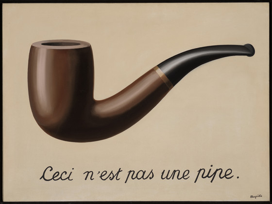

Licenca
To delo je na voljo pod pogoji slovenske licence Creative Commons 2.5:
priznanje avtorstva - nekomercialno - deljenje pod enakimi pogoji.
Celotna licenca je na voljo na spletu na naslovu http://creativecommons.org/licenses/by-nc-sa/2.5/si/. V skladu s to licenco je dovoljeno vsakemu uporabniku delo razmnoževati, distribuirati, javno priobčevati, dajati v najem in tudi predelovati, vendar samo v nekomercialne namene in ob pogoju, da navede avtorja oziroma avtorje in izdajatelja tega dela. Če uporabnik delo predela, kar pomeni, da ga spremeni, preoblikuje, prevede ali uporabi to delo v svojem delu, lahko predelavo dela ponudi na voljo le pod pogoji, ki so enaki pogojem iz te licence oziroma pod enako licenco.

Zemljevid
Imam reke, ne vode; imam gozdove, ne dreves; imam mesta, ne zgradb. Kaj sem?
Odgovor gornje uganke je zemljevid. Če je zemljevid natančen in geometrično zvest resničnemu svetu, potem lahko zemljevid služi kot model resničnega sveta. Tako lahko s pomočjo zemljevida izvajamo meritve, sprejemamo odločitve o navigaciji ter analiziramo ali interpretiramo pokrajino z zemljevida in domnevamo, da enaki zaključki veljajo tudi za resnični svet.
Vendar gornja uganka razkriva tudi nekaj globljega glede našega dojemanja sveta in sodelovanja v njem. Alfred Korzybski, poljsko-ameriški filozof in inženir, je skoval stavka »Zemljevid ni ozemlje« (ang. The map is not the Territory) in »Beseda ni stvar« (ang. The Word is not the Thing). S stavkoma je želel povedati, da ljudje pogosto mešajo modele resničnosti s samo resničnostjo.
Podobno sporočilo je s svojo sliko »Izdaja podob« (fra. La trahison des images) želel posredovati tudi belgijski nadrealistični slikar René Magritte. Slika prikazuje podobo pipe, pod katero je slikar napisal stavek »To ni pipa« (fra. Ceci n'est pas une pipe).
Vir slike
Znamenita pipa. Kako so mi ljudje očitali! Pa vendar, ali bi lahko prižgali mojo pipo? Ne, to je samo predstavitev, kajne? Torej, če bi na svojo sliko napisal »To je pipa«, bi lagal!
René Magritte
Po Korzybskem modeli sicer predstavljajo stvari, vendar niso enaki tem stvarem. Tudi v svojih najboljših primerih modeli zahtevajo razlago. So nepopolni, ker so po definiciji abstrakcija nečesa bolj zapletenega. Poleg tega pogosto napačno razumemo njihove omejitve, saj ljudje raje uporabljamo nepravilne modele, kot da modelov sploh ne bi uporabljali. To je v naši naravi.
O različnih modelih, ki jih uporabljamo – od informacijskega modeliranja zgradb, modeliranja energetske učinkovitosti do staromodnih elektronskih preglednic – nikoli ne smemo razmišljati kot o končnem cilju našega dela. So le sredstvo za dosego cilja. Modeli ne nadomeščajo spretnosti ali znanja, temveč jih povečujejo in nadgrajujejo. Poznavanje omejitev modelov in konteksta, v katerem modeli delujejo, je bistvenega pomena.
Seveda potrebujemo modele, zemljevide in orodja, saj so ključnega pomena za natančno analizo, napovedovanje in načrtovanje. Vendar ta vprašanja presegajo tehnična področja. Da bi razumeli zapletenost resničnosti, tudi naš um ustvari svoje mentalne zemljevide: ideje, prepričanja, bližnjice. Tudi ti mentalni zemljevidi so lahko napačni.